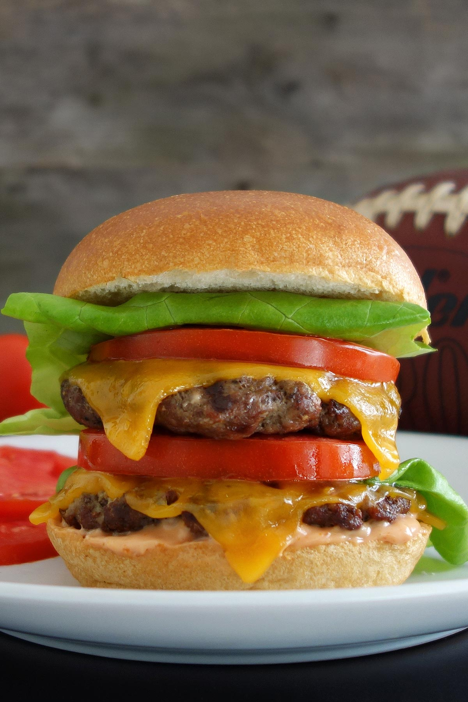

California Burger

Description
This is a Midwest take on a California Burger. If you're feeling more adventurous feel free to add slices of avocado or
a spread of guacamole.
Ingredients
- 2 lbs. Ground Beef 80/20
- Sea Salt to Taste
- 1 tsp. Black Pepper
- American Cheese (or cheese of your choice)
- Vine-Ripened Tomato
- Lettuce
- Pickle Slices(on the side if preferred)
- Mayo
- Ketchup
- Mustard
- Buns
Directions
- Season ground beef with salt & pepper
- Create bun sized patties out of the hamburger
- Cook/grill burgers - approximately 4 minutes before flipping
- Flip burgers
- Add cheese about a minute before completion
- Burgers are done once they reach 140 degrees (medium)
- Let rest
- Top your burger however you like! A true California Burger requires the tomato, lettuce, mayo, and
ketchup at the very least
- ENJOY!